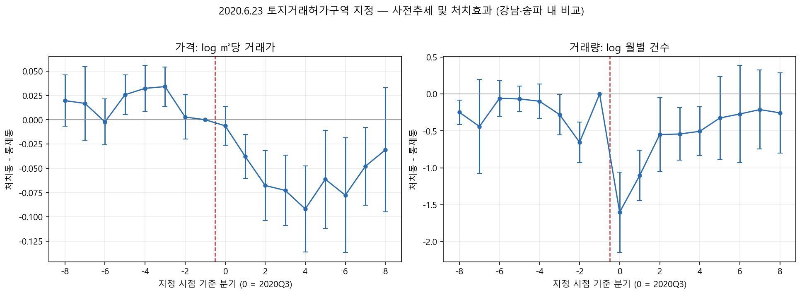
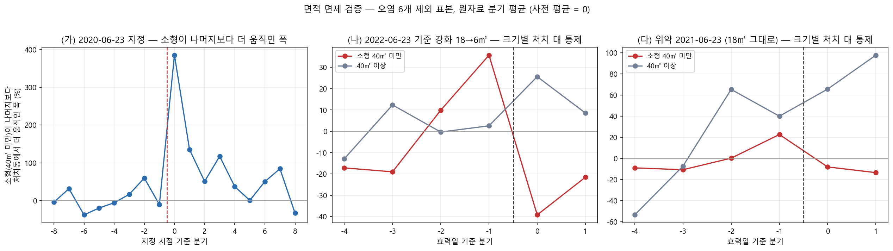
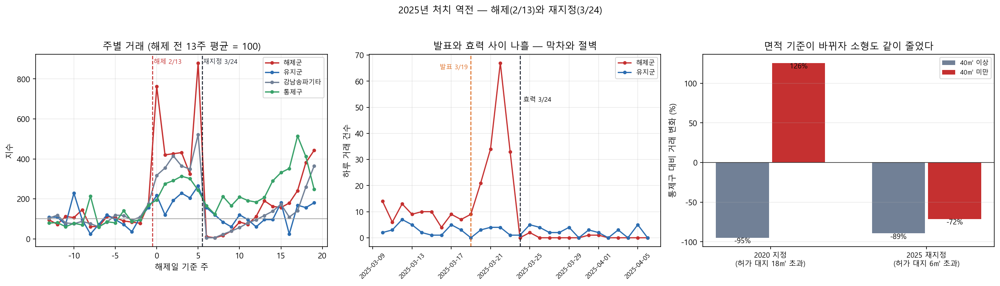
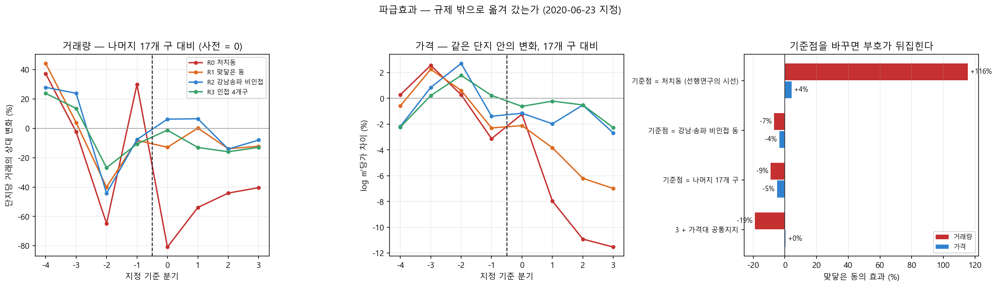

중간 발표 · 2~4주차 결론과 다음 계획
규제는 거래를 멈췄다
얼마나
직후 3개월 −71 ~ −80%
누구에게
허가 면적 기준이 갈랐다
어디로
같은 동 안에만 번졌다
세 방향으로 나눠 묻는다. 2~4주차에 확정한 답을 간추리고, 지난주 끝낸 분석과 남은 계획을 밝힌다.
세 방향으로 나눠 묻는다. 2~4주차에 확정한 답을 간추리고, 지난주 끝낸 분석과 남은 계획을 밝힌다.
마지막 줄은 3주차에 뒤집힌다.

| 확인한 것 | 결과 |
|---|---|
| 동 27개 중 4개를 고르는 모든 경우 | 1위 / 17,550 |
| 경계를 9~20억으로 옮기면 | 15억에 계단 없음 |
| 2022-06 허가 면적 18 → 6㎡ 강화 | 소형만 −33.2% |
| 기준을 안 바꾼 2021 재지정 (위약) | −8.1% (0.61) |
| 통제군 오염 6개 동 제외 | 결론 그대로 |
2020년 지정의 허가 대상은 대지 18㎡ 초과였다. 작은 집은 허가 없이 살 수 있었다. 대출 ✕ · 면적 기준 ○

2025년 2월에 규제가 풀렸다가 39일 만에 다시 걸렸다. 이번 지정은 면적 기준이 6㎡라 소형 면제가 거의 없다.
| 2025-03-24 재지정 | 거래량 효과 |
|---|---|
| 재지정 직후 5주 | −78.9% |
| 대형 (40㎡ 이상) | −89.4% |
| 소형 (40㎡ 미만) | −71.5% |
3주차에 "2025년에는 소형도 같이 줄어야 한다"고 적어 두었다. 대형과의 차이가 2020년 +3.818 에서 2025년 +0.987 로 줄었다.

| 규제 밖 어디까지 | 거래량 효과 |
|---|---|
| 같은 동 안 — 규제가 유지된 단지 | −26.5% |
| 맞닿은 동 | −9.0% |
| 인접 4개 자치구 | +23.0% (0.16) |
같은 자료, 같은 동, 같은 기간인데 무엇과 견주느냐로 부호가 뒤집힌다.

점 하나가 설계 조합 하나로 추정한 효과다. 가로선 0 은 "지정이 없었을 때와 같다"는 뜻이고, 0 아래면 거래가 줄었다는 뜻이다. 처치군·통제군·창·날짜 세는 법·빈칸 처리·척도를 전부 조합했다.

'방향으로만'이란 — "가격이 내렸다"까지는 쓰고 "몇 % 내렸다"는 쓰지 않는다는 뜻이다. 설계를 조금만 바꿔도 −18%에서 +4%까지 움직이기 때문이다.
| 무엇 | 말할 수 있나 | 근거 또는 막힌 곳 |
|---|---|---|
| 지정 직후 거래량 −71 ~ −80% | 예 | 192/192 · 17,550 중 1위 · 사전추세 1.6배까지 버팀 |
| 효과가 단지마다 달랐다 | 예 | 허가 면적 기준 — 2022 강화에서 소형만 −33% |
| 파급은 같은 동 안에만 | 예 | 유지 단지 −26.5% · 옆 동·옆 구는 비유의 |
| 가격 −4 ~ −7% | 방향만 | 사전추세를 열면 0.22 에서 무너짐 · 합성대조군 p 0.511 |
| 효과가 얼마나 오래 가나 | 아니오 | 기준 분기에 따라 −20 ~ +16% 로 흔들린다 |